Sequences and series
Sequences
Maple's terminology differs a little from ours. To us, a sequence is always an infinite list of numbers, but Maple understands them as finite, though aribtrarily long. You can type in the entries of a sequence one by one, or use seq to generate them from a rule.
| > |
s:= 1, 1/2, 1/3, 1/4, 1/5; |
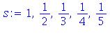
| > |
s:= seq( 1/n, n=1..10 ); |
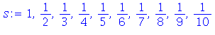

Some sequences are defined by a recursion relation in which each new term is defined in terms of earlier values. The most famous of these is the Fibonacci sequence. We can use an arrow function to implement such a recurrence.
| > |
fib:= n-> fib(n-1) + fib(n-2); |
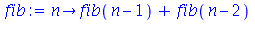
In order to close up the definition, we need two initial values of the sequence.
Now we can ask for any term in the sequence, or construct a part of it.
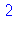
| > |
seq( fib(n), n=1..12 ); |
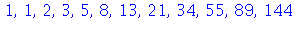
Limits of sequences
To Maple, a 'sequence' is finite and cannot have a limit. However, we can take the expression for the nth term and then take a limit in the usual way.
| > |
a[n] := (n^2-n)/(2*n^2+sqrt(n)); |
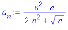
| > |
limit( a[n], n=infinity ); |
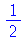
| > |
b[n]:= cos(n)^2 / exp(n); |
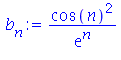
| > |
limit( b[n], n=infinity ); |
Series
We can use the Sum command to represent either a finite sum or an infinite series. For example, the partial sums of the geometric series are given by
| > |
s[n]:= Sum( r^i, i=0..n ); |
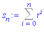
The full geometric series lets n go to infinity.
| > |
S:= Sum( r^i, i=0..infinity ); |

In these cases Maple can actually tell you what the sum is, but that's pretty rare. Geometric and telescoping series are the elementary examples.
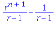
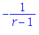
| > |
Sum( 1/(n*(n+2)), n=1..infinity ); |
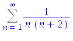
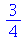
It's more likely that Maple will give a reference to some mathematical object that you have never encountered before, as in the harmonic series.
| > |
h[n]:= Sum( 1/i, i=1..n ); |
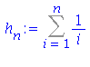
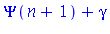
| > |
limit( %, n=infinity ); |

Finally, it's worth knowing that if you just wish to add up a finite list of numbers, the add command may be what you really want.
| > |
value( Sum( 1/i, i=1..1000) ); |
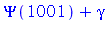
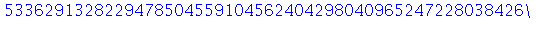
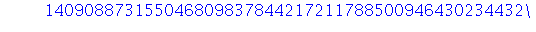
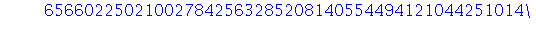
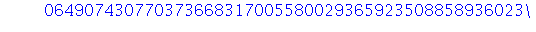
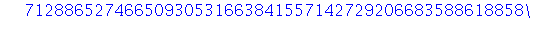
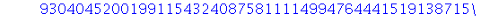
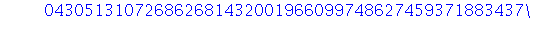
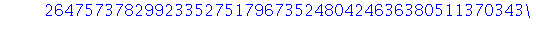